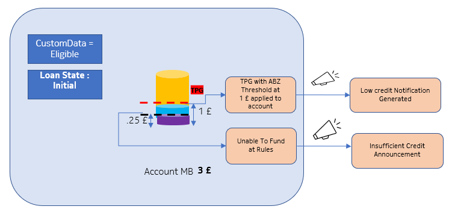
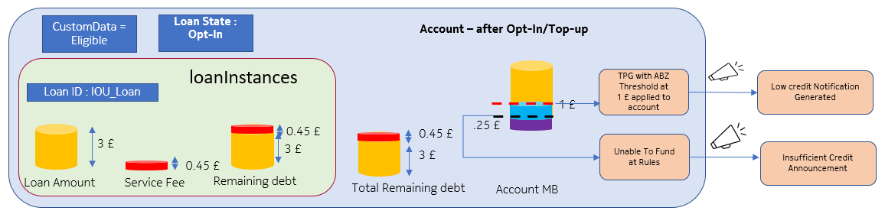

Operators can configure an announcement or notification for insufficient credit, or low credit (at threshold). The following figures show scenarios for insufficient credit announcement at initial and opt-in states. For an example scenario, refer to Example 3: Pre-call announcement for low balance and unable to fund.
Figure: Insufficient credit announcement at initial state

{kind=link}
Figure: Insufficient credit announcement at opt-in state

{kind=link}
 Note:
Note:- Announcement parameters are not supported for thresholds applicable to loan balance.
- Announcement parameters for announcement frequency and priority are not
supported for the following:
- RSV rules for RATING_POST_PROCESSING trigger, for insufficient credit (unable to fund) (default frequency is always)
- Threshold applicable to MainBalance (absolute from zero) (default Frequency is always).
- Announcement information through low balance and standard plan is not supported. If both are configured in threshold rules, then both announcement information are be sent in response.
- If announcement information attributes are configured in multiple rule groups of RATING_POST_PROCESSING trigger, then announcement information with the last rule group is sent in response.